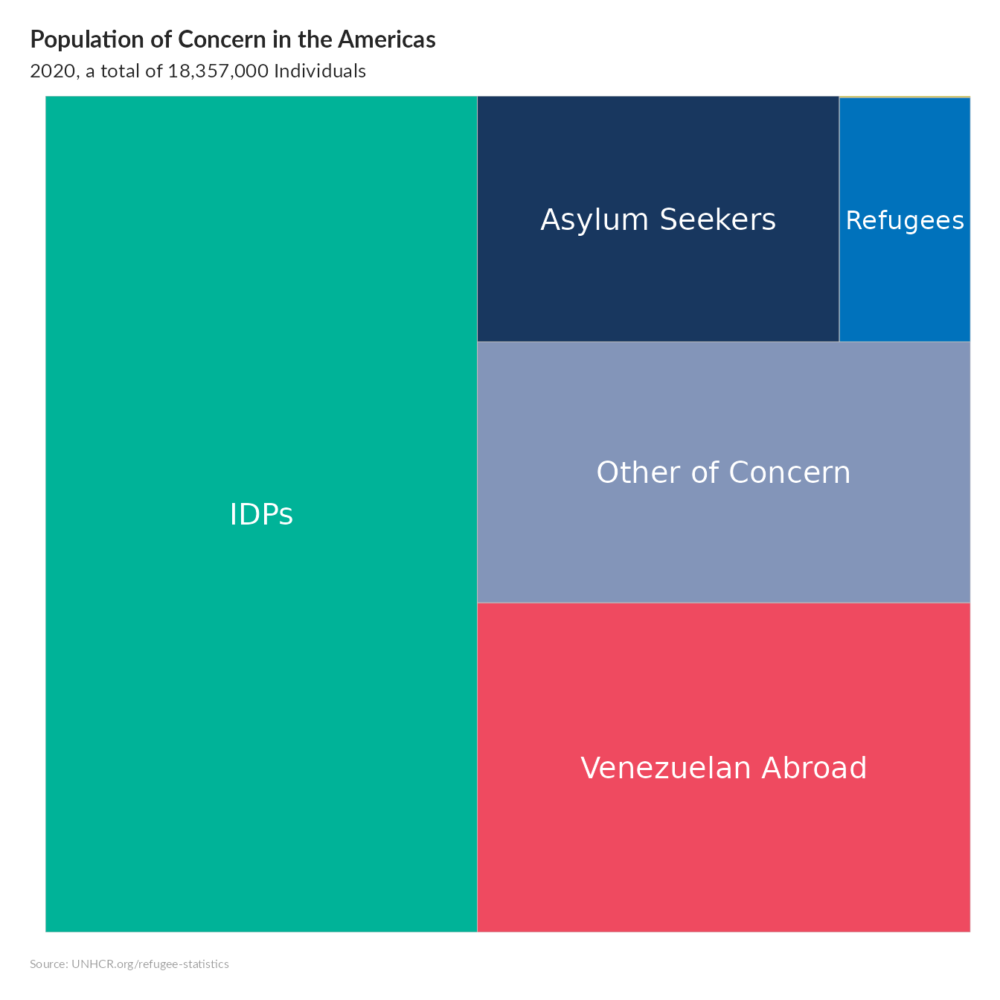

thisbureau <- "Americas"
lastyear <- max(unhcrdatapackage::end_year_population_totals_long$Year)
end_year_population_totals_long.asy <- dplyr::left_join( x= unhcrdatapackage::end_year_population_totals_long,
y= unhcrdatapackage::reference,
by = c("CountryAsylumCode" = "iso_3"))
# Create data
group <- c("IDPs",
"Venezuelan Abroad",
"Asylum Seekers",
"Refugees",
"Other of Concern",
"Stateless")
valuelastyearworld <- c(as.integer(sum(end_year_population_totals_long.asy[ end_year_population_totals_long.asy$Year ==lastyear & end_year_population_totals_long.asy$Population.type =="IDP" ,
c("Value")])),
as.integer(sum(end_year_population_totals_long.asy[ end_year_population_totals_long.asy$Year ==lastyear & end_year_population_totals_long.asy$Population.type =="VDA" ,
c("Value")])),
as.integer(sum(end_year_population_totals_long.asy[ end_year_population_totals_long.asy$Year ==lastyear & end_year_population_totals_long.asy$Population.type =="ASY" ,
c("Value")])),
as.integer(sum(end_year_population_totals_long.asy[ end_year_population_totals_long.asy$Year ==lastyear & end_year_population_totals_long.asy$Population.type =="REF" ,
c("Value")])),
as.integer(sum(end_year_population_totals_long.asy[ end_year_population_totals_long.asy$Year ==lastyear & end_year_population_totals_long.asy$Population.type =="OOC" ,
c("Value")])),
as.integer(sum(end_year_population_totals_long.asy[ end_year_population_totals_long.asy$Year ==lastyear & end_year_population_totals_long.asy$Population.type =="STA" ,
c("Value")])) )
valuelastyear <- c(as.integer(sum(end_year_population_totals_long.asy[end_year_population_totals_long.asy$UNHCRBureau == thisbureau & end_year_population_totals_long.asy$Year ==lastyear & end_year_population_totals_long.asy$Population.type =="IDP" ,
c("Value")])),
as.integer(sum(end_year_population_totals_long.asy[end_year_population_totals_long.asy$UNHCRBureau == thisbureau & end_year_population_totals_long.asy$Year ==lastyear & end_year_population_totals_long.asy$Population.type =="VDA" ,
c("Value")])),
as.integer(sum(end_year_population_totals_long.asy[end_year_population_totals_long.asy$UNHCRBureau == thisbureau & end_year_population_totals_long.asy$Year ==lastyear & end_year_population_totals_long.asy$Population.type =="ASY" ,
c("Value")])),
as.integer(sum(end_year_population_totals_long.asy[end_year_population_totals_long.asy$UNHCRBureau == thisbureau & end_year_population_totals_long.asy$Year ==lastyear & end_year_population_totals_long.asy$Population.type =="REF" ,
c("Value")])),
as.integer(sum(end_year_population_totals_long.asy[end_year_population_totals_long.asy$UNHCRBureau == thisbureau & end_year_population_totals_long.asy$Year ==lastyear & end_year_population_totals_long.asy$Population.type =="OOC" ,
c("Value")])),
as.integer(sum(end_year_population_totals_long.asy[end_year_population_totals_long.asy$UNHCRBureau == thisbureau & end_year_population_totals_long.asy$Year ==lastyear & end_year_population_totals_long.asy$Population.type =="STA" ,
c("Value")])) )
value2019 <- c(as.integer(sum(end_year_population_totals_long.asy[end_year_population_totals_long.asy$UNHCRBureau == thisbureau & end_year_population_totals_long.asy$Year ==2019 & end_year_population_totals_long.asy$Population.type =="IDP" ,
c("Value")])),
as.integer(sum(end_year_population_totals_long.asy[end_year_population_totals_long.asy$UNHCRBureau == thisbureau & end_year_population_totals_long.asy$Year ==2019 & end_year_population_totals_long.asy$Population.type =="VDA" ,
c("Value")])),
as.integer(sum(end_year_population_totals_long.asy[end_year_population_totals_long.asy$UNHCRBureau == thisbureau & end_year_population_totals_long.asy$Year ==2019 & end_year_population_totals_long.asy$Population.type =="ASY" ,
c("Value")])),
as.integer(sum(end_year_population_totals_long.asy[end_year_population_totals_long.asy$UNHCRBureau == thisbureau & end_year_population_totals_long.asy$Year ==2019 & end_year_population_totals_long.asy$Population.type =="REF" ,
c("Value")])),
as.integer(sum(end_year_population_totals_long.asy[end_year_population_totals_long.asy$UNHCRBureau == thisbureau & end_year_population_totals_long.asy$Year ==2019 & end_year_population_totals_long.asy$Population.type =="OOC" ,
c("Value")])),
as.integer(sum(end_year_population_totals_long.asy[end_year_population_totals_long.asy$UNHCRBureau == thisbureau & end_year_population_totals_long.asy$Year ==2019 & end_year_population_totals_long.asy$Population.type =="STA" ,
c("Value")])) )
colorPopType <- c("#00B398", # IDP
"#EF4A60", # VDA
"#18375F", # ASY
"#0072BC", # REF
"#8395b9",# OOC
"#E1CC0D") #STA
datatree <- data.frame(group,
valuelastyear,
value2019,
valuelastyearworld,
colorPopType)
# treemap
# treemap(datatree,
# index="group",
# vSize="value",
# type="index",
# vColor="color",
# #type="manual",
# #palette = colorPopType,
# border.col= "white" ,
# )
## Treemapify
ggplot(datatree,
aes(area = valuelastyear,
fill = group,
label = group)) +
treemapify::geom_treemap() +
treemapify::geom_treemap_text(colour = "white",
place = "centre", size = 15) +
# scale_fill_viridis_c() +
scale_fill_manual( values = c( "IDPs" = "#00B398",
"Venezuelan Abroad"="#EF4A60",
"Asylum Seekers" = "#18375F",
"Refugees" = "#0072BC",
"Other of Concern" ="#8395b9",
"Stateless"="#E1CC0D")) +
unhcRstyle::unhcr_theme(base_size = 8) + ## Insert UNHCR Style
theme(legend.position = "none") +
## and the chart labels
labs(title = "Population of Concern in the Americas",
subtitle = paste0( lastyear, ", a total of ", format(round(sum(datatree$valuelastyear), -3), big.mark=","), " Individuals"),
x = "",
y = "",
caption = "Source: UNHCR.org/refugee-statistics ")